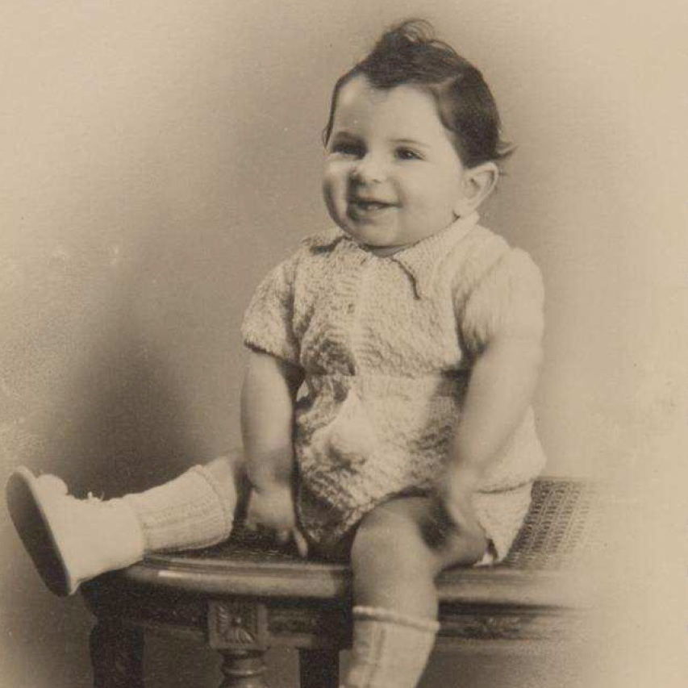

Portrait d’archive
Enfants Altauz
Guy ALTAUZ
Guy ALTAUZ est né le 27/04/1943 à Grenoble en France.
Rassemblé à Lyon, il est déporté à Auschwitz le 11/08/1944 par le convoi n°78. Il est mort en déportation.
Arrété le 28/07/1944. Déporté avec son père Boris, sa mère Elise et son frère Marcel. Déclaré officiellement "mort en déportation" au JO n° 241 du 17/10/2006.
Dernière adresse connue : 4, place Gensoul 69002 (Lyon)
Nom : ALTAUZ
Prénom(s) : Guy
Date naissance : 27/04/1943
Âge (ans) : 1
Lieu naissance : Grenoble
Pays ou département : Isère
Lieu rassemblement : Lyon
Dernière adresse : 4, place Gensoul
Ville : Lyon
Code postal : 69002
N° Convoi : 78
Date déportation : 11/08/1944
Informations diverses : Fils de Boris Boruch Altauz (1892) et de Elisa Altauz née Demant (1915) et demi frère de Marcel. La famille est arrêtée la 28/07/1944. Guy et sa mère Elise lors d’une consultation chez un médecin juif. Marcel et Boruch au domicile familial. Guy sera interné seul à l' Antiquaille à Lyon du 28/07/1944 au 11/08/1944. La famille est déportée par le convoi 78 du 11/08/1944 qui arrivera à Auschwitz le 22/08/1944.
Altauz (Guy), né le 27 avril 1943 à Grenoble (Isère), décédé le 2 août 1944 à Auschwitz (Pologne) et non vers juillet-août 1944 à Lyon (Rhône) JO. En fait, décédé sans doute le 22/08/1944 date d’arrivée du convoi 78 à Auschwitz.
Altauz, née Demant (Elisa) le 17 février 1915 à Paris (20e) (Seine), décédée le 2 août 1944 à Auschwitz (Pologne) et non le 28 juillet 1944 à Lyon (Rhône). Altauz (Boruch), né le 1er janvier 1892 à Ciechanow (Pologne), décédé le 16 août 1944 à Auschwitz (Pologne), et non «décédé» sans autres précisions. En fait, décédés sans doute le 22/08/1944 date d’arrivée du convoi 78 à Auschwitz.
Lieu de déportation : Auschwitz
Lieu de départ : Lyon
Nombre total de déporté·e·s du convoi : 430
Gazé·e·s à l'arrivée : 128 (29,8 %)
Survivant·e·s en 1945 : 36 (8,4 %)
Marcel ALTAUZ (S)
Marcel ALTAUZ est né le 02/05/1928 à Paris en France.
Rassemblé à Lyon, il est déporté à Auschwitz le 11/08/1944 par le convoi n°78. Enregistré dans la liste des déportés de Dachau. Survivant ?
Arrêté le 28/07/1944. Déporté avec son père Boris, sa mère Elise et son frère Guy.
Dernière adresse connue : 4 place Gensoul 69002 (Lyon)
Nom : ALTAUZ
Prénom(s) : Marcel
Date naissance : 02/05/1928
Âge (ans) : 16
Lieu naissance : Paris 12
Pays ou département : Seine
Lieu rassemblement : Lyon
Dernière adresse : 4, place Gensoul
Ville : Lyon
Code postal : 69002
N° Convoi : 78
Date déportation : 11/08/1944
Informations diverses : Fils du premier mariage de Boris Boruch Altauz (1892) et demi frère de Guy. La famille est arrêtée la 28/07/1944. Guy et sa mère Elise lors d’une consultation chez un médecin juif. Marcel et Boruch au domicile familial. Ils sont tous déportés par le convoi 78. Marcel a été transféré à Dachau. Survivant en 1945.
Altauz (Guy), né le 27 avril 1943 à Grenoble (Isère), décédé le 2 août 1944 à Auschwitz (Pologne) et non vers juillet-août 1944 à Lyon (Rhône). Altauz, née Demant (Elisa) le 17 février 1915 à Paris (20e) (Seine), décédée le 2 août 1944 à Auschwitz (Pologne) et non le 28 juillet 1944 à Lyon (Rhône). Altauz (Boruch), né le 1er janvier 1892 à Ciechanow (Pologne), décédé le 16 août 1944 à Auschwitz (Pologne), et non «décédé» sans autres précisions. En fait, décédés sans doute le 22/08/1944 date d’arrivée du convoi 78 à Auschwitz.
Lieu de déportation : Auschwitz
Lieu de départ : Lyon
Nombre total de déporté·e·s du convoi : 430
Gazé·e·s à l'arrivée : 128 (29,8 %)
Survivant·e·s en 1945 : 36 (8,4 %)